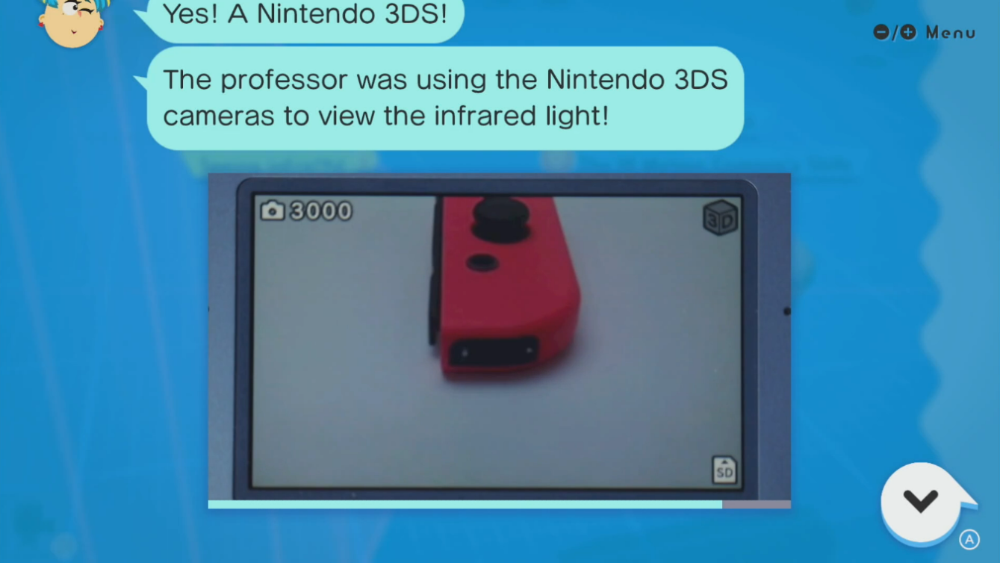

Television remotes
I used a TV remote so bad it prompted me to write this article.
HI. This is another post about a specific subject I am not qualified in. I don't really know if that's really the most optimal way to write blogs. Or what the most optimal way to write a blog *is*. It's a fun exercise because I have to think about those subjects and what I have to say pertaining to said subject. If I write enough articles, I will be able to control the world with my spiritual powers.
What should a remote be?
This is my very first step in my logical journey. If I am upset about something, what should that thing be, as to not upset me? This may seem obvious to most people, but I felt the need to point it out. To answer this question, we must first look at remotes that do actually appeal to me, and maybe even remotes that appall me (what a remote SHOULDN'T be).
Universal programmable remotes are really cool :)
I originally had a blurb about really early, non-programmable remotes, but that's lame shit. Everybody knows the Zenith, and I don't care about it that much anyways. But did you know that Steve Wozniak, of Apple fame, founded a company dedicated entirely to universal remotes, created the very first universal programmable remote? It's called the CORE remote and it's awesome! The company flopped and now they're $1.2k a pop on eBay. If I ever buy one, please send me to a psychiatric ward, as that would mean I have gone off the deep end. But before you call the ward, let me show it off on this site. It is a very cool product. It has a REPLACEABLE IR transmitter (consumers' right to repair for the win!) ((to be more specific, the IR transmitter is connected via an RS232 interface, so you can plug it into stuff, very cool), the ability to be programmable (like mentioned above), and the most fun part, absolutely no controls! Take a look at what it took to program a volume change:
That's right, ***program***! Make no mistake, this is not a consumer device. It is purpose-built for sweaty hackers and nerds from the 90s. Which is the hallmark of a great product. Like previously stated, the company went under, but this remote won't be the last of its kind.
Harmony remotes
I found out about these through F4mi's video. Please go watch it, if you haven't already. And her other videos. She talks about cool early 2000s technology. It is nothing like the soulless tech we have nowadays.
If you don't want to watch the video, here is the low-down on Harmony remotes: They are programmable remotes with a ridiculously huge database of IR signals. They have a mini-USB port which allows them to connect to your PC. Some models have a color LCD screen. They are essentially the Jesus San Goku of remotes. But you already know all that, since you watched the F4mi video, right?
Flipper Zero (FZ)
Similarly mentioned in F4mi's video. But I swear I knew about this before I watched the video.
The FZ is a very sweet device. Eleet loot. Premium swag. It has an IR module, so it can receive and send out IR signals. This allows it to receive and send out TV (and other appliances) signals, provided it has the correct data (you can do this by looking up publicly accessible databases, or even just hooking it up to your Harmony remote, if you dare to). This means they can work as an UPR (Universal Programmable Remote. Get with the terms)! I wouldn't call it the most pleasant remote experience, but it does work, so what the hell.
Regular non UPR remotes. Almost worthless
This is the remote that pissed me off. The Great Evil: The Samsung SolarCell. The one good thing about it is the solar panel. That part's actually really cool. It uses supercapacitors instead of batteries (what is the difference? I do not know). You will absolutely never guess how the volume controls work. How do you fit 3 controls into one button. Unbearably stupid. I despise it. 4 branded buttons! Oh my God! I know lots of other remotes have more, but when you're spending hundreds on a 4k television, it is not ideal to have advertising shoved down your throat on your $5 hunk of plastic. It has a microphone in it so it can always hear you.
I just generally despise every tiny superflat remote that has <10 buttons. Just awful. I don't know how people can just accept them. I don't know how they started? I imagine it is either because of those AndroidTV dongles (of course, once that became baked into your device, you don't need a separate big boy remote anymore..), or Apple. Have you ever seen an Apple TV remote?! Honestly, I can kinda respect the 2-button one. That's dedication right there. But anything beyond that is nonsense! I want buttons on my remote. Lots. And I should have them! Although, I guess this wasn't really avoidable. As TV software.. evolves (calling AndroidTV an upgrade would be an insult to everything software ever made) there are simply less buttons actively required. When was the last time you used anything other than the arrows or the volume slider?
A nonshit non-UPR remote
Behold, the LG Magic Remote (2015 edition. It all goes downhill from there!):

This remote rocks because it has no stupid streaming service buttons, a 3D button (hell. yes.), a scrollwheel!! How novel is that? But, most importantly of all, it is a goddamn Wiimote!!! Ridiculously exciting remote. Can't say I've ever daily used one, but I tried out the 2018 model at a friend's house a few times, and it was great. Virtually every other remote can go to hell, though. They are all worthless and I do not fancy them or any of their aspect.
Modern option(s)
There isn't actually any reason to buy new technology when older used technology will be universally better and convenient. This chapter is a trap! But I wanted to talk about a very specific brand: SofaBaton (SB).
As far as I can tell, SofaBaton is yet another company specialized in UPRs. And they are getting terrifyingly close to my ideal remote. the SB X2 seemingly has a metal chassis and an USB-C port, but, as far as I can tell, that port is just for charging. To add IR data, you either have to use their database, or make it learn from the original remote, which means no using the publicly available massive databases. Unless SB's database already contains them? I wouldn't take that bet, though. The U2 has a scrollwheel and backlit buttons. Hell yes. I didn't even know I needed backlit buttons until now. My only complaints from what I've seen are, 1. God, this is expensive! But I guess that's the point, a premium price for a premium device. 2. You need to download the phone app and make an account to set your remote up. Modern tech has got some serious issues, man. I do NOT want to make an account for my remote! And as far as I can tell, no way to connect it to your PC. I do not trust my phone for tasks as important as "programming macros on my remote". That's PC business. 3. Unfortunately, this remote does not seem very durable and/or repair friendly, which is greatly upsetting when they're asking you to spend hundreds on these. 4. I don't know if you can upload custom pictures on the screen? I need my Christian Mario. 5. The website looks AI generated to hell and back. All the way to the product descriptions on the pages. Overall though, these seem to be pretty decent modern picks. Provided you're willing to pay the price modern tech comes with. Eugh.
{kind=link}
My dream remote should be/have...
- Ergonomic. None of this flat 10 button chicanery. Absolutely not!
- A non-touchscreen LCD panel. Toushcreen devices are fundamentally evil.
- The possibility of uploading Christian Mario onto the remote.
- Universal.
- Programmable.
- Durable.
- WiiMote controls. This is a big deal! Significantly more relevant than touchscreens.
- A scrollwheel? Kinda useless but supremely cool.
- An USB-C charging and data port.
- Backlit buttons!!
- Ideally, without soft rubber buttons. Eugh. Hate those. Clicky plastic, or even metal (!!) works great. I wouldn't be too picky on this one though, I don't really mind them that much.

The Switch's IR camera, as seen by the 3DS. Not really related to remotes at all. I just wanted to show people a Nintendo Labo screenshot.